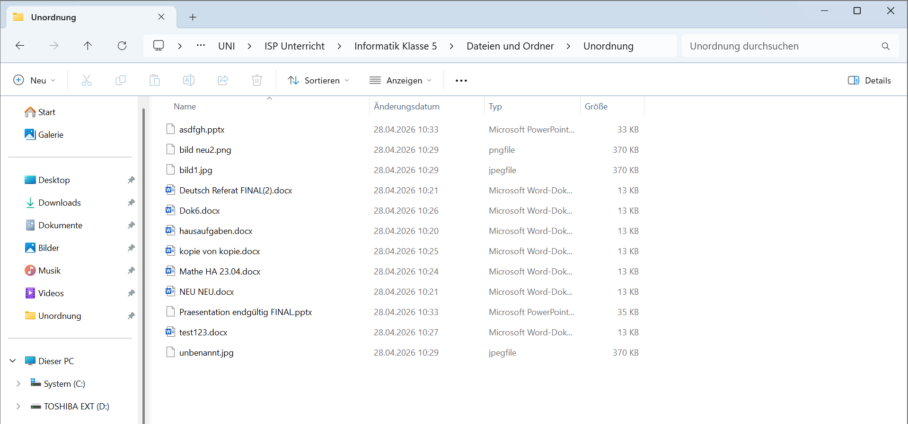
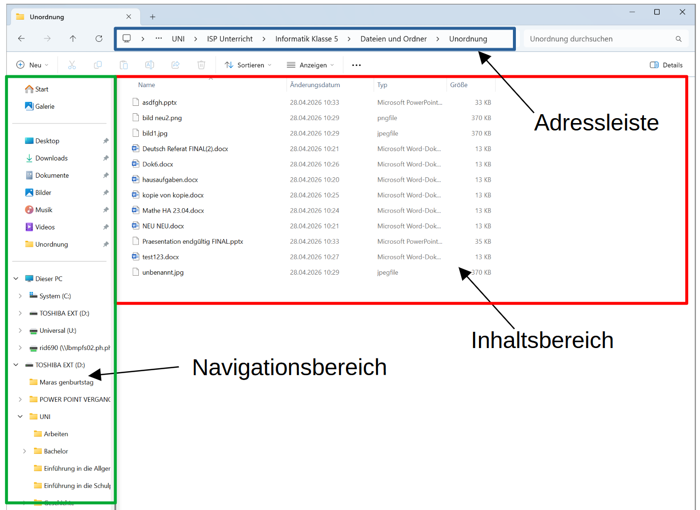
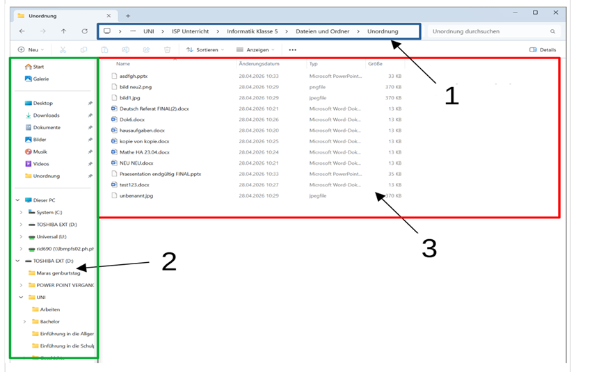

Bildungsplan 2016 Baden-Württemberg · MB 1 · MB 5 · MB 6

Könnt ihr die Hausaufgaben-Datei von letzter Woche finden?
Was ist hier das Problem? Was würdest du ändern?
Ein Behälter für Dateien und andere Ordner.
Ein einzelnes gespeichertes Dokument, Bild oder Programm.
H:\Informatik_5\Aufgaben\
Mathe_HA_Kapitel3.docxReferat_Rom_2025-04.pptxMein_Bericht.docxunbenannt.docx, NEU.docxAufsätz!&Co.docx bericht.docxdatei1, datei2, datei3Die Dateiendung zeigt, welches Programm eine Datei öffnet und was sie enthält.
Hausaufgaben.docx → Word-DateiSchreibe die passende Zahl in das Kästchen. Klicke auf eine Erklärung um die Lösung aufzudecken! 👆
Trage die fehlenden Informationen ein und schneide den Spickzettel aus – er hilft dir in jeder Stunde!
Informatik_5Aufgaben · Praesentationen ·
BilderDie drei Bereiche im Datei-Explorer sind mit Nummern markiert. Schreibe den richtigen Begriff aus dem Wortkasten in die Zeile.

Klicke auf das Programm, um es aufzudecken! 👆
Ergänze die Sätze in deinem Arbeitsblatt:
.docx steht für Microsoft Word Dokument.